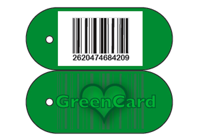

Green Card
The assignment was to design a ‘script’, influencing people’s behaviour.
The AH bonus card collects your consumer behaviour and makes money from it. I wanted to see if I could, with a bit of lateral thinking, use this
information for a better purpose.
My idea was to create a company that collects and researches consumer behaviour and use this to stimulate the sale of fairtrade and organic products.
The consumer now has the choice to donate its consumer behavior to the beterment of the earth or to stick to the regular bonus card.
In this way you and your personal consumer behavior are no longer a victim of the supermarket.
You regain a certain amount of ownership over it and you can use it to do good.
The green bonus card will become the icon and membership badge, showing the world that you are supporting this movement.